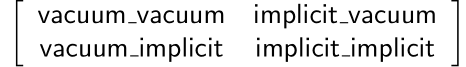

Compute the Hydration Energy of Benzene Using An Implicit Solvent Model#
This tutorial provides a step-by-step guide to compute the hydration energy of benzene using an implicit solvent model with AmberTools, OpenMM, and FastMBER. AmberTools is used for parameterizing force fields and generating topology (prmtop) and initial coordinate (inpcrd) files. OpenMM runs simulations to obtain trajectories and potential energies. FastMBAR calculates relative free energies.
1. Parametrize Force Fields and Generate prmtop and inpcrd Files#
First, we need to obtain the necessary input files to run openMM simulations. To do this, download the mol2 file of benzene (mobley_3053621.mol2). Once the mol2 files are stored in the desired directory, we will check for any missing parameters in the mol2 file. If there are any missing parameters, the closest alternative parameter will be selected and stored in the frcmod file. The command to check missing parameters and save alternative parameters:
parmchk2 -i mobley_3053621.mol2 -f mol2 -o mobley_3053621.frcmod
Create mobley_3053621.in file to generate prmtop and inpcrd files. In the mobley_3053621.in file, you need to load the force field (gaff in this example), frcmod, and mol2 files.
# Source leaprc.gaff
source leaprc.gaff
#Set default radii
set default PBRadii mbondi3
#Load the frcmod
LoadAmberParams mobley_3053621.frcmod
# Load the mol2
structure = loadmol2 mobley_3053621.mol2
# Save prmtop and inpcrd files
saveamberparm structure mobley_3053621.prmtop mobley_3053621.inpcrd
# Quit
quit
Run the mobley_3053621.in file using the command:
tleap -f mobley_3053621.in
After running this command, mobley_3053621.prmtop, mobley_3053621.inpcrd, and leap.log files will be created. In the leap.log file, look for the line “Exiting LEaP: Errors = 0; Warnings = 0; Notes = 0”. Ensure that “Errors” equals zero before proceeding to the next steps.
2. Construct and Run openMM for Obtaining Trajectory#
The purpose of this step is to gather trajectory for both the vacuum condition and implicit solvent model using openMM simulation. Create simulation_implicit_mobley_3053621.py and load necessary packages, inpcrd, and prmtop files inside the script.
from openmm.app import *
from openmm import *
from openmm.unit import *
import os
#Create trajectory output file
trajectory_file = 'mobley_3053621_implicit_trajectory.pdb'
#Specify the path to inpcrd and prmtop files
inpcrd_path = '/cluster/tufts/dinglab/shared/Benchmark/mobley_3053621.inpcrd'
prmtop_path = '/cluster/tufts/dinglab/shared/Benchmark/mobley_3053621.prmtop'
#load inpcrd and prmtop files
inpcrd = AmberInpcrdFile(inpcrd_path)
prmtop = AmberPrmtopFile(prmtop_path)
Create the openMM system. This example is for implicit solvent models.
# create openMM system
system = prmtop.createSystem(implicitSolvent=OBC2, constraints=HBonds)
# request integrator
integrator = LangevinMiddleIntegrator(300*kelvin, 1/picosecond, 0.002*picoseconds)
# request platform
platform = Platform.getPlatformByName('CPU')
# create a simulation context
simulation = Simulation(prmtop.topology, system, integrator, platform)
# Set the initial position
simulation.context.setPositions(inpcrd.positions)
# request the local energy minimization
simulation.minimizeEnergy()
simulation.step(1000)
#Record the output trajectory file
simulation.reporters.append(PDBReporter(trajectory_file, 100))
# Run simulation
for i in range(2500):
simulation.step(1000)
print(f"Completed simulation for mobley_3053621")
print(f"Trajectory saved as: mobley_3053621_implicit_trajectory.pdb")
Run simulation_implicit_mobley_3053621.py and you will collect a trajectory file for implicit solvent model.
For the vacuum conditions of an openMM simulation, it is very similar to implicitit solvent model. You need to create simulation_vacuum_mobley_3053621.py. The main difference is you need to replace one line in the system setup, and you also need to modify the name of output trajectory file. For the vacuum conditions, use the following code when creating the system:
system = prmtop.createSystem(nonbondedMethod=NoCutoff, constraints=HBonds)
Run simulation_vacuum_mobley_3053621.py, and you will collect a trajectory file for vacuum condition. We need trajectories from both vacuum and implicit solvent models for the next step.
3. Calculate Energies Based on openMM Trajectory and Compute Relative Free Energy with FastMBAR#
In this step, we will use the trajectory computed by the previous step and calculate potential energies in openMM. Then, using those results, FastMBAR will compute relative free energy, which can be used to calculate the hydration energy.
Create MBAR_mobley_3053621.py. The first part of the code is setting up the system for openMM simulation.
import numpy as np
import mdtraj
from openmm import app, unit
import openmm as omm
from FastMBAR import FastMBAR
# Load topology file
topology = app.AmberPrmtopFile('/cluster/tufts/dinglab/shared/Benchmark/mobley_3053621.prmtop')
# Load trajectory
stride = 1
traj_vacuum = mdtraj.load_pdb('/cluster/tufts/dinglab/shared/Benchmark/mobley_3053621_vacuum_trajectory.pdb', stride=stride)
traj_implicit = mdtraj.load_pdb('/cluster/tufts/dinglab/shared/Benchmark/mobley_3053621_implicit_trajectory.pdb', stride=stride)
# Simulation parameters
temperature = 300 * unit.kelvin
friction_coef = 1 / unit.picosecond
time_step = 0.002 * unit.picoseconds
# Create integrator for vacuum and implicit solvent
integrator_vacuum = omm.LangevinMiddleIntegrator(temperature, friction_coef, time_step)
integrator_implicit = omm.LangevinMiddleIntegrator(temperature, friction_coef, time_step)
# Define systems for vacuum and implicit solvent
system_vacuum = topology.createSystem(nonbondedMethod=app.NoCutoff)
system_implicit = topology.createSystem(implicitSolvent=app.OBC2, nonbondedMethod=app.NoCutoff)
# Create OpenMM Context for vacuum and implicit solvent
context_vacuum = omm.Context(system_vacuum, integrator_vacuum)
context_implicit = omm.Context(system_implicit, integrator_implicit)
In the second part of the code, we first set up a matrix for FastMBAR, then compute potential energies based on trajectory using openMM, and finally use FastMBAR to compute relative free energy. For FastMBAR, we arrange a matrix structured as follows:
The first word is where the trajectory is generated, and the second word is where the energy calculation is performed. For example, vacuum_vacuum represents the trajectory generated under vacuum conditions used to compute energy in vacuum. Vacuum_implicit represents the trajectory generated under the vacuum used to compute energy in the implicit solvent model.
# Create a matrix for FastMBAR.
potential_energies = {
'vacuum_vacuum': [],
'vacuum_implicit': [],
'implicit_vacuum': [],
'implicit_implicit': []
}
# Compute potential energies in both condition for each frame in vacuum trajectory
for frame in traj_vacuum.xyz:
context_vacuum.setPositions(frame)
context_implicit.setPositions(frame)
state_vacuum = context_vacuum.getState(getEnergy=True)
state_implicit = context_implicit.getState(getEnergy=True)
# Store the potential energies at the respective categories
potential_energies['vacuum_vacuum'].append(state_vacuum.getPotentialEnergy().value_in_unit(unit.kilojoule_per_mole))
potential_energies['vacuum_implicit'].append(state_implicit.getPotentialEnergy().value_in_unit(unit.kilojoule_per_mole))
# Compute potential energies in both condition for each frame in implicit solvent model trajectory
for frame in traj_implicit.xyz:
context_vacuum.setPositions(frame)
context_implicit.setPositions(frame)
state_vacuum = context_vacuum.getState(getEnergy=True)
state_implicit = context_implicit.getState(getEnergy=True)
# Store the potential energies at the respective categories
potential_energies['implicit_vacuum'].append(state_vacuum.getPotentialEnergy().value_in_unit(unit.kilojoule_per_mole))
potential_energies['implicit_implicit'].append(state_implicit.getPotentialEnergy().value_in_unit(unit.kilojoule_per_mole))
# Convert potential energies to numpy arrays
potential_energies['vacuum_vacuum'] = np.array(potential_energies['vacuum_vacuum'])
potential_energies['vacuum_implicit'] = np.array(potential_energies['vacuum_implicit'])
potential_energies['implicit_vacuum'] = np.array(potential_energies['implicit_vacuum'])
potential_energies['implicit_implicit'] = np.array(potential_energies['implicit_implicit'])
# Set the number of column and rows for the matrix
N = traj_vacuum.n_frames + traj_implicit.n_frames
M = 2
# Compute matrix A and define kbT
A = np.zeros((M, N))
kbT = unit.BOLTZMANN_CONSTANT_kB * temperature * unit.AVOGADRO_CONSTANT_NA
kbT = kbT.value_in_unit(unit.kilojoule_per_mole)
# Populate the matrix. Divide the each energy by kbT to make the energy unitless
A[0, :traj_vacuum.n_frames] = potential_energies['vacuum_vacuum'] / kbT
A[0, traj_vacuum.n_frames:] = potential_energies['implicit_vacuum'] / kbT
A[1, :traj_vacuum.n_frames] = potential_energies['vacuum_implicit'] / kbT
A[1, traj_vacuum.n_frames:] = potential_energies['implicit_implicit'] / kbT
# Define num_conf (number of conformations) for each state
num_conf = np.array([traj_vacuum.n_frames, traj_implicit.n_frames])
# Solve MBAR equations using FastMBAR
fastmbar = FastMBAR(energy=A, num_conf=num_conf, cuda=False, verbose=True)
print("Relative free energies: ", fastmbar.F)
Run MBAR_mobley_3053621.py, and you will obtain relative free energies from two conditions: vacuum and implicit solvent model.
4. Compute Hydration Energy and Benchmarking#
To compute hydration energy, subtract the energy computed in the vacuum condition from the energy computed under the implicit solvent model. Finally, compare this result against reference data for benchmarking.